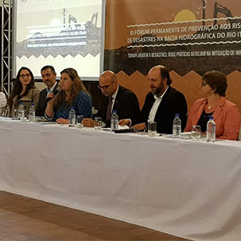

Algumas Noticias da UNIDAVI:
Formatura Institucional

Na tarde da quinta-feira (23), o Centro Universitário para o Desenvolvimento do Alto Vale do Itajaí - Unidavi realizou a cerimônia de Colação de Grau Institucional dos Cursos de Administração e Educação Física.
O Reitor Prof. M.e Célio Simão Martignago conduziu o momento acompanhado do vice-reitor e pró-reitor de Administração, professores Alcir Texeira, do professor Doutor Mehran Ramezanali, coordenador do curso de Administração e do professor M.e Júlio Cesar Nasário, coordenador do curso de Educação Física.
Seis academicos concluiram seus cursos e receberam o diploma de graduação. Parabéns aos formados!
Fórum de Prevenção aos Riscos de Desastres na Bacia Hidrográfica do Rio Itajaí
Neste mês aconteceu o XI Fórum Permanente de Prevenção aos Riscos de Desastres na Bacia Hidrográfica do Rio Itajaí, realizado em Brusque. O evento de três dias abordou entre várias questões relacionadas as práticas ambientais e de urbanização, ações que auxiliam a minimizar os desastres naturais causados na região banhada pelo rio Itajaí.
A professora Cheila da Silva participou do evento e representou a Unidavi na mesa redonda de abertura, com a temática "Controle de terraplanagem e prevenção de riscos: Implicações e responsabilidades". A mesa foi composta por diversos profissionais que abordaram a temática da terraplagem x desastres, dentro de suas respectivas áreas de conhecimento, relatando ainda diversas experiências diante de alguns casos.
Grande parte do público que se fez presente no momento foram acadêmicos do curso de Engenharia Civil da IES, o que se faz necessário que estes futuros profissionais tenham a visão ambientalmente correta dos impactos ambientais que a terraplanagem pode causar se feito de forma inadequada.
Fez parte da programação ainda as palestras "Utilização da Carta Geotécnica de Aptidão à Urbanização Aplicada à Gestão do Território", "Terraplanagem: o Patinho Feio da Geotecnia Brasileira", "Impacto do Uso e Ocupação de Encostas e Obras de Terraplanagem na Potencialização do Desastre".
E no último dia os participantes puderam conferir a oficina "Utilização da Carta Geotécnica de Aptidão à Urbanização Aplicada à Gestão do Território", e o minicurso "Impacto do Uso e Ocupação de Encostas e Obras na Terraplanagem na Potencialização de Desastres: Análise de Casos Práticos". Os participantes também fizeram uma visita técnica e conheceram as práticas de terraplanagem em Brusque.
Eleição Cipa

Nos dias 21 e 22 de agosto aconteceu a Eleição da Cipa. Professores e funcionários dos 4 campi votaram para escolher os Representantes dos Empregados - Gestão 2018/2019.
Nesta quinta-feira, dia 23, foi feita a apuração dos votos e anunciado os eleitos:
- Claudia Adriana da Rosa
- Airton Cachoeira
- Ademir Celso Correia Junior
- Françoa Jorge da Silva
- David Ferreira
- Fabiane Terezinha Rosa
Foram considerados titulares: O primeiro, segundo e terceiro candidatos com maior número de votos válidos.
Foram considerados suplentes: O quarto, quinto e sexto candidatos com maior número de votos válidos.
Noticias Recentes da Unidavi: